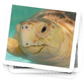
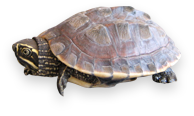

The Tale of Eartha the Sea Turtle
Based on the true story of a sea turtle name Eartha, this enchanted tale tells the story of a young sea turtle who finds help in the last place she expected.
Through colorful imagery it helps children learn how important it is to help animals who become injured due to man’s negligence.

Meet the Real Eartha
The tale of Eartha the Sea Turtle is based on the true story of a sea turtle named Eartha who was rescued and rehabilitated by the Loggerhead Marinelife Center in Juno Beach, Florida.
View pictures of Eartha.
Adopt a Real Sea Turtle
Everyday staff members and volunteers of the Loggerhead Marinelife Center care for, and rehabilitate injured sea turtles. Now you can help too. By adopting an injured sea turtle, you can help aid their recovery.

Learn how you can adopt a sea turtle like Eartha